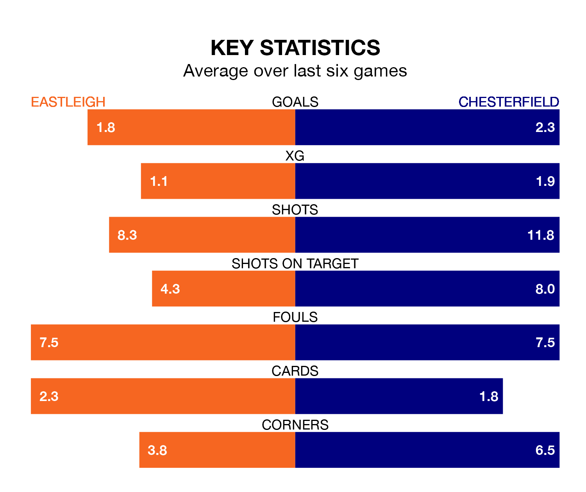

Chesterfield are strong favourites to take all three points despite Eastleigh's home advantage in Saturday's match at the Silverlake Stadium.
*Betting Company* are offering odds of 1.32 on Chesterfield sealing the win, with the visitors sitting first in National League table.
Eastleigh, who are 12th in the league and 36 points behind the Spireites, are priced at 6.5 to win. A draw is set at 4.75.
With 72 goals in 29 games so far this season, Chesterfield are the league's highest scorers with 2.5 goals per game. And they are conceding fewer than average, letting in 34 goals at a rate of 1.2 per game.
Eastleigh are also above average scorers, with 1.7 goals per game, compared to a league average of 1.5. They have conceded 2.0 goals per game.
In the last 10 years, Eastleigh and Chesterfield have played each other on 11 occasions. Eastleigh won three of them, Chesterfield seven, and they drew once.
On average, the Spitfires scored 1.1 goals and the Spireites 1.5 in those matches.
Their last meeting was on November 25, when Chesterfield won 3-2 at home.
The Spitfires are in disappointing form in National League, with one win and two draws from their last six games.
With five wins and one loss over that period, the Spireites's form is much better – they have taken 15 points from 18, compared to the home side's five.
Eastleigh's last match was on January 27, a 4-0 loss against Altrincham.
Chesterfield beat Southend United 3-0 last time out, also on January 27, with Armando Dobra, James Berry-McNally and Joseph Richard Quigley on the scoresheet.
Updated: 10:40 (UTC), 01/02/24